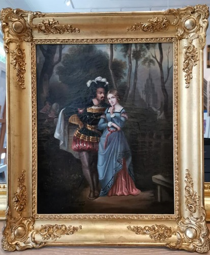
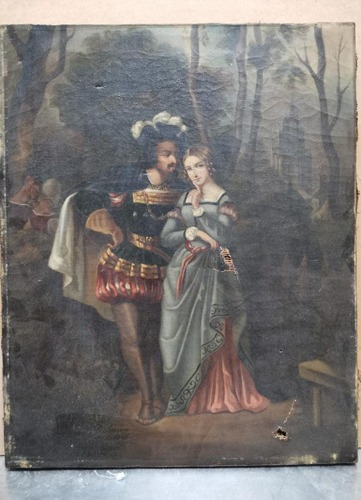
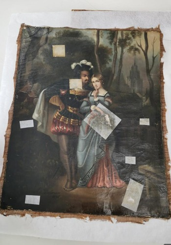

Restauration de tableaux au Luxembourg
Le temps laisse son empreinte : vernis jaunis, salissures, poussière, petites déchirures ou altérations peuvent ternir la beauté d'un tableau ancien. À Hollerich, Sylvie Schied, restauratrice agréée monuments historiques, établit le diagnostic avant toute intervention.

Diagnostic sur place
Nous étudions chaque œuvre avant toute intervention.
Restauration tableaux
Nettoyage, consolidation et harmonisation avec agrément monuments historiques.
Dorure à la feuille
Cadres, miroirs et objets dorés selon les techniques traditionnelles.
Avant, pendant, après




Le diagnostic, avant le geste
Apportez le tableau à l'atelier, sans le démonter. Un cadre mal retiré arrache parfois la toile ou le papier. Sylvie Schied regarde la couche picturale, le châssis, les soulèvements, les manques, le vernis. Elle dit ce qui se fait, ce qui se discute, et ce que nous refusons : repeindre une œuvre « au neuf », masquer une lacune sous un aplomb décoratif, remplacer un cadre ancien par une imitation plastique.
Le devis est écrit. Aucune intervention sans votre accord. Les étapes classiques, selon l'état : dépoussiérage, tests de solubilité, allègement de vernis jauni, consolidation d'une déchirure, masticage ponctuel, réintégration mesurée, vernis final. Chaque geste vise à retrouver la présence de la pièce, pas à inventer un tableau plus jeune que son auteur.
Diagnostic, dorure, limites
- DiagnosticSylvie Schied, agréée monuments historiques. Devis écrit, aucune intervention sans votre accord.
- DorureFeuille d'or sur cadres, miroirs, consoles, statues et ferronnerie. Apprêts, bol, brunissoir : pas une peinture métallisée.
- Ce que nous ne faisons pasNous ne repeignons pas une œuvre au neuf. Nous ne remplaçons pas un cadre ancien par du plastique doré.
Sylvie Schied, restauratrice agréée MH
L'agrément monuments historiques est délivré en France après examen des compétences. Il distingue une restauratrice formée à la conservation du patrimoine d'un atelier qui « rafraîchit » les tableaux. À Luxembourg, cet agrément est l'argument le plus rare du métier : il protège les familles qui confient un portrait d'ancêtre autant que les pièces destinées à une collection. Sylvie travaille à Hollerich, dans le même lieu que l'encadrement : une fois la restauration stabilisée, le cadre et le verre se décident sans transporter l'œuvre une seconde fois.
Préservation du patrimoine
Nettoyage et restauration avec Sylvie Schied, agréée monuments historiques. Chaque œuvre est étudiée avant d'intervenir, pour retrouver l'éclat sans trahir les matériaux ni l'intention de l'artiste. La dorure à la feuille (or, parfois argent ou or blanc selon le cadre) reprend les techniques d'atelier : apprêts, bol, pose de la feuille, brunissoir. Ce n'est pas une bombe métallisée. Un miroir, une console, un cadre baroque : le même soin.
Questions restauration et dorure
Qu'est-ce que l'agrément monuments historiques ?
C'est une reconnaissance officielle de compétence pour intervenir sur le patrimoine classé. Sylvie Schied l'a obtenu. Il n'autorise pas n'importe quelle retouche : il engage une méthode (diagnostic, réversibilité, matériaux adaptés). Au Luxembourg, cet agrément reste un signal rare pour un atelier d'encadreur.
Combien coûte une restauration de tableau ?
Le prix suit l'état, pas le format seul. Un vernis jauni n'est pas une déchirure, une déchirure n'est pas un soulèvement de couche. Diagnostic à l'atelier, devis écrit, aucune intervention sans votre accord. Merci de ne pas démonter le cadre vous-même.
Restaurez-vous aussi les cadres dorés ?
Oui. Dorure à la feuille d'or (apprêts, bol, brunissoir), pas une peinture métallisée. Cadres, miroirs, consoles, statues, ferronnerie. Nous ne remplaçons pas un cadre ancien par du plastique doré.
En combien de temps ?
Après diagnostic. Les séchages ne se précipitent pas. Un nettoyage de vernis et une dorure locale se comptent en semaines, pas en 48 h. Nous posons un planning avec vous dès le devis.
Apportez votre tableau pour un diagnostic et un devis. Merci de ne pas le démonter vous-même.